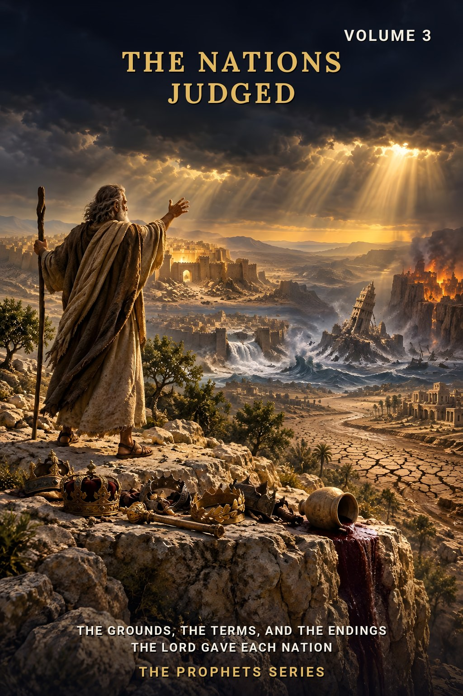
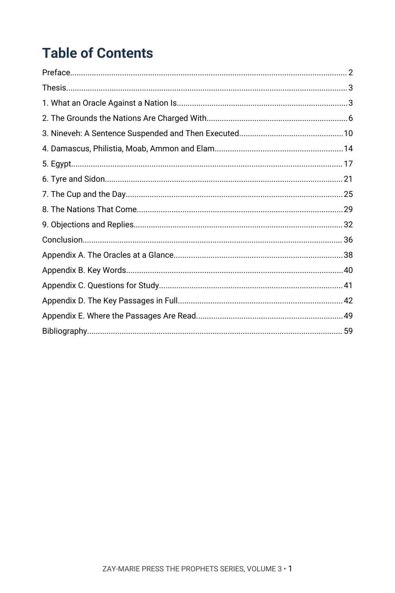
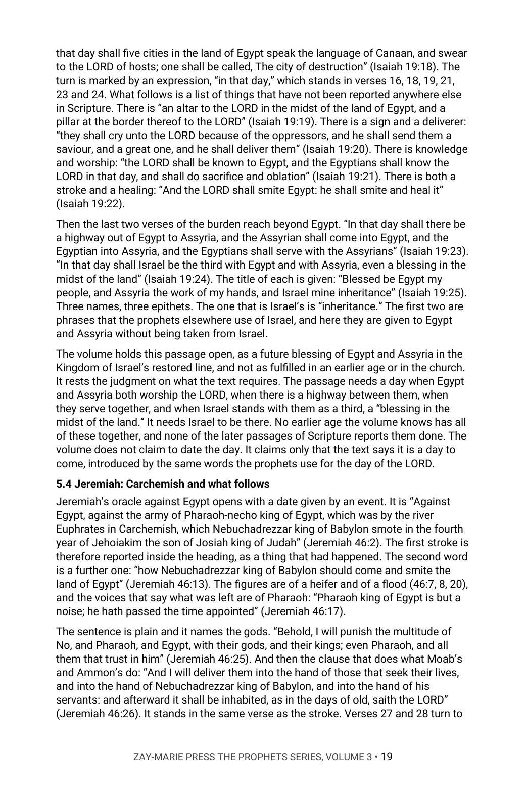
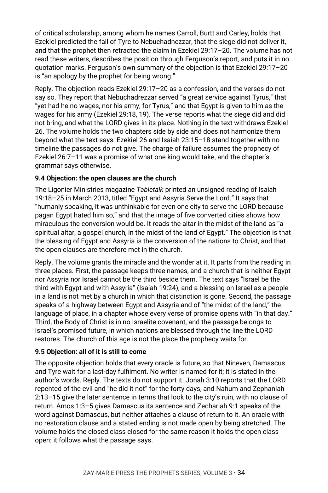

The Nations Judged
The Grounds, the Terms, and the Endings the LORD Gave Each Nation
Were the oracles against Egypt, Tyre, Moab and Nineveh all fulfilled long ago, all still to come, or all about the church? What does each oracle say of its own ground, its term and its ending?
Jonah goes to Nineveh and the city turns. Nahum later gives its sentence, and no word of return is attached. Jeremiah says the LORD will bring again the captivity of Moab in the latter days. Ezekiel says Nebuchadrezzar had no wages for Tyre, and gives him Egypt. Isaiah says Egypt will be called “my people.” Are these one prophecy on one timeline?
It argues that they are not. Each oracle names a ground, a term and an ending, and the text sorts them into those that are closed, those that are part-fulfilled and those that are open. The open ones it holds for the Kingdom, as nations blessed through Israel’s restored line. In Chapter 9 it sets its reading beside modern writers who see it differently.
New to the framework? The Digital Studies teach the distinctions this volume relies on. Start with the Digital Studies →
A Commentary That Argues a Position
This volume does not list the views held about the oracles against the nations and leave the choice to the reader. It says what the author believes each oracle is: what it names as its ground, what it names as its term, what it says comes after, and whether the text itself reports it done. It gives the evidence from the prophets’ own sentences and answers the strongest objections by name.
It is the third volume of The Prophets Series, each volume of which is built around one narrower question the prophets raise themselves, not a walk through the prophetic books. Volume 1 asks how the prophets say a word of the LORD is known, and Volume 2 asks what they condemned in Israel’s worship; this volume asks what each oracle against a nation says of its own ground, term and ending. Babylon, Edom and Revelation 17 and 18 stay with the volumes that read them. It is a different kind of book from the Digital Studies, which report what a passage says. Scripture is quoted from the King James Version throughout, checked word for word, and the writers named in Chapter 9 are quoted only from texts the author has read.
Related Reading
Digital Studies
Study 31 — The Judgments of Scripture Sets the judgments of Scripture side by side as the passages state them; this volume argues what each oracle against a nation says of its own ground, term and ending.
Study 7 — The Day of the Lord Reads the day of the LORD through judgment and restoration; this volume takes Joel 3 and Zephaniah 3:8 only as they tie the oracles to a day.
Study 27 — Israel’s Seven Appointed Feasts Reads the feast of tabernacles inside Leviticus 23; this volume reads Zechariah 14:16–19 only for the nations that go up to keep it.
Commentary Series
Prophetic Commentary Series, Volume 5 — Armageddon and the Winepress Argues the gathering, the campaign and the coming of Revelation 14, 16 and 19 and Isaiah 63; this volume reads Edom and the cup only as the oracles tie them to a day and leaves that campaign there.
Prophecy & Mystery Commentary Series, Volume 5 — Separate Courts Argues the separate courts of judgment, the living nations of Matthew 25 among them; this volume reads the oracles against the nations and sets Joel 3 and Zephaniah 3:8 into no court.
Prophecy & Mystery Commentary Series, Volume 3 — The Kingdom Program Argues the Kingdom promised to Israel on the earth; this volume reads the open clauses of the oracles as nations blessed through that restored line.
Bible Book Companion Series
Bible Book Companion — Isaiah Interprets the book of Isaiah through its key passages.
Bible Book Companion — Jeremiah Interprets the book of Jeremiah through its key passages.
Bible Book Companion — Ezekiel Interprets the book of Ezekiel through its key passages.
From the Nature of an Oracle to the Objections
What an Oracle Is
Read Jeremiah 1:10, Jeremiah 18:7–10 and the cup of Jeremiah 25, and mark the four ways Scripture reports an oracle fulfilled.
The Grounds
Trace violence, betrayal, gloating, pride and idols through Amos 1 and 2, Obadiah and Ezekiel 25, and note what each oracle names as its reason.
Nineveh and the Near Nations
Follow Jonah 3, Nahum and Zephaniah 2:13–15, then Damascus, Philistia, Moab, Ammon and Elam, and mark which sentences carry a clause of return.
Egypt and Tyre
Read Isaiah 19 and 20, Jeremiah 46, Isaiah 23 and Ezekiel 26 and 28 to 30, noting what the text reports done and what it states further.
The Cup and the Day
Follow the measure through Jeremiah 25, Obadiah 15, Zephaniah 3:8 and Joel 3, and see how each sentence is cut to its ground.
The Nations That Come, and the Objections
Read Isaiah 2, Zephaniah 3 and Zechariah 8 and 14, then hear named modern writers who read the oracles differently and weigh each reply.
Read the Word in Its Context
Jeremiah 25:15
“For thus saith the LORD God of Israel unto me; Take the wine cup of this fury at my hand, and cause all the nations, to whom I send thee, to drink it.”
Jonah 3:10
“And God saw their works, that they turned from their evil way; and God repented of the evil, that he had said that he would do unto them; and he did it not.”
Jeremiah 48:47
“Yet will I bring again the captivity of Moab in the latter days, saith the LORD. Thus far is the judgment of Moab.”
Isaiah 19:25
“Whom the LORD of hosts shall bless, saying, Blessed be Egypt my people, and Assyria the work of my hands, and Israel mine inheritance.”
Ezekiel 29:18
“Son of man, Nebuchadrezzar king of Babylon caused his army to serve a great service against Tyrus: every head was made bald, and every shoulder was peeled: yet had he no wages, nor his army, for Tyrus, for the service that he had served against it:”
Obadiah 15
“For the day of the LORD is near upon all the heathen: as thou hast done, it shall be done unto thee: thy reward shall return upon thine own head.”
Zephaniah 3:9
“For then will I turn to the people a pure language, that they may all call upon the name of the LORD, to serve him with one consent.”
Zechariah 14:16
“And it shall come to pass, that every one that is left of all the nations which came against Jerusalem shall even go up from year to year to worship the King, the LORD of hosts, and to keep the feast of tabernacles.”
What This Book Sets Out to Do
Each oracle against a nation names a ground, a term and an ending. Some are closed, some are part-fulfilled and some are open, and the text itself says which.
A sentence on one nation is not a sentence on every nation, and a word of return attached to one oracle is not a word attached to all. The volume asks each oracle what it says of its own ground, term and ending, and the reader will see where the sentences fall.
Preview the Volume Before You Purchase
Click any page to enlarge it for reading.


Table of Contents
See the full order of the argument, from the Preface to the Bibliography.



The Argument at Work
See the method: Isaiah 19 read in order, the “in that day” verses set out, and what the text says and does not say.


Objections and Replies
See the modern writers named on both sides, each position described as read, and the answer to it.
A Full Commentary on the Nations Judged
60-Page Digital PDF
Cover and a fully numbered interior.
Nine Chapters
From the nature of an oracle to the objections and replies.
Objections and Replies
Modern writers named on both sides, each objection answered from the text.
Passage by Passage
Jonah 3, Nahum, Amos 1 and 2, Jeremiah 25 and 46 to 49, Isaiah 19, 20 and 23, Ezekiel 26 and 28 to 30, Obadiah, Zephaniah 3, Joel 3, Isaiah 2 and Zechariah 8 and 14 read in order, with what each leaves unsaid.
Comparison Tables
Each nation’s ground set beside its term, its ending and its class.
Conclusion
The position restated in full, with a closing table.
Five Appendices
The oracles at a glance, the key words in Roman letters, study questions, the key passages in full and a verse-by-verse index of where the passages are read.
Bibliography
Every work cited, listed by author and title.
The Nations Judged
60-page digital PDF · For personal use